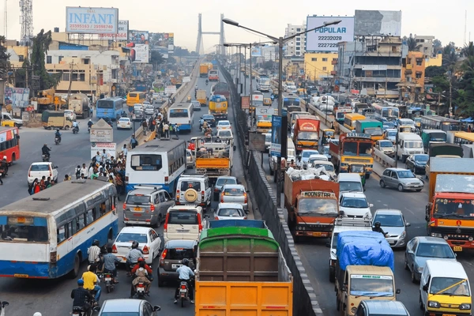

Lost Time
The average driver and commuter in Bengaluru loses over 240 hours every year just sitting waiting in heavy peak-hour traffic.
Wasted Money
Leaving vehicle engines running in long jams wastes millions of rupees in fuel every single day across the city's main ring roads.
Dirty Air
Slow, crawling traffic creates heavy exhaust smoke, which directly ruins the clean air in our neighborhoods.
How ClearWayBlr Helps Fix It
Our Collective City Mission
Sharing the Roads Better
We tell drivers and commuters about roadblocks ahead of time so they can pick alternate streets and stop roads from getting overloaded.
Commuters Helping Each Other
Instead of waiting for slow official updates, everyday drivers and commuters give each other instant updates the second they spot a problem.
Saving Your Fuel Cash
Spending less time completely stopped on the road means you don't burn through your fuel or waste money.
Smart and Easy Planning
When you can see where the jams are, you can easily change your travel times or routes to have a stress-free drive.
How to Use This Site
Quick Instructions
Welcome to your community dashboard! This platform relies on live data updates from drivers and commuters to beat traffic gridlocks within Bengaluru.
- Check the live map for active bottlenecks.
- Report real-time traffic delays you find.
- Bypass blocks using smart path mapping.
Step-by-Step Website Guide
Learn how reporting feeds the map to clear your journey
1. Report a Bottleneck
When drivers and commuters notice a jam, they click "Report Bottleneck". Fill in the road name and hit send to warn the community.
2. It Becomes a Red Marker
Once reported, that spot instantly shows up as a Red Marker on other people's live maps if it falls along their travel path.
3. Route Optimization
When you look at the map, our system checks for those blocks and automatically suggests **alternative routes** with fewer or no red markers, optimizing your trip completely.